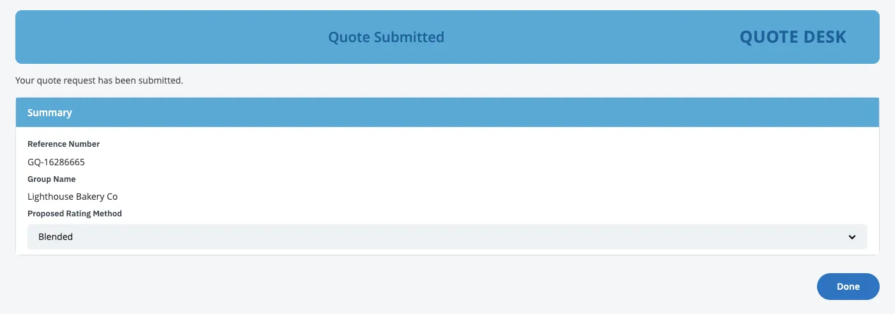
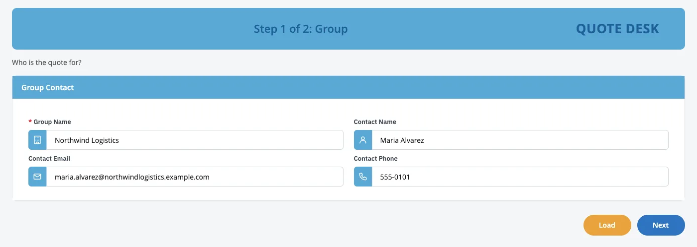

IBM Bob × BAW Dev Tools · sprint review
From single widgets to whole sections that remember.
Sprint 2 gave us small widgets, one drag per field. Sprint 3 drags whole sections and saves every quote.
See the changeWidgets, one at a time
Whole sections that remember
“Thanks for joining. In the next few minutes I want to show you one thing: what changed between Sprint 2 and Sprint 3, and why it matters for your team.”
Point at the grey 2 and the loose pieces under it.
“A quick reminder of where we were. In Sprint 2, Bob rebuilt your Quote screen from small widgets: a text field, a checkbox, a button. Each one is a piece your developers can drag around in BAW’s Coach Designer.”
“That was a big step forward. But you asked for bigger pieces. The same block of fields shows up on several screens, and nobody wants to build it again every time. And there was a second gap: nothing the screen collected was saved to a database.”
Point at the blue 3 and the group under it.
“Sprint 3 closes both gaps. A whole section is now one piece you drag in, and the screen remembers every quote.”
At a glance
| Topic | Sprint 2 Quote widgets | Sprint 3 Groups and the database |
|---|---|---|
| What you drag in Coach Designer | One widget: a text field, a checkbox, a button | A whole section, a group such as “Group Contact” |
| Where it lives | A toolkit every app can use2 | Inside your app, as a View under User interface1 |
| Reuse across steps | Rebuild the same fields on each screen | Place the same group on the form and on the review |
| Read-only review | A separate review list | The same group, placed read-only5 |
| Change it once | Change each screen | Change the group; every screen follows |
| Data | Nothing saved to a database | Submit saves the quote; Load brings it back |
“Sprint 2 was about the pieces. Sprint 3 puts the pieces together, and keeps the data.”
“Here is the whole story in one table. Grey is Sprint 2, blue is Sprint 3.”
Go down the rows.
“What you drag: before, one field at a time. Now, a whole section, like Group Contact.”
“Where it lives: the widgets live in a shared toolkit that every app can use. The new groups live inside your own app, where your team finds them under User interface.”
“The review screen: before, it had its own separate list. Now we drop the same group on the review, set to read-only.”
“And the last two rows are the ones I’d ask you to remember. Change a group once, and every screen follows. And the data is saved.”
“So: Sprint 2 was about the pieces. Sprint 3 puts the pieces together, and keeps the data.”
Drag a whole section, not one field.
Quote form
Section
- Section
- Text Field
- Checkbox
- Button
5 drags on the form, and again on the review.
Quote form
Group Contact
Review read-only
Group Contact
- Group Contact View
1 drag on the form, 1 on the review.
- Configure each placement. Editable on the form, read-only on the review, optional fields hidden.6
- Change it in one place. Move or relabel a field and every screen follows. Bob keeps the change on a rebuild.
- Test it alone. Each group has its own Preview service.
- Modern too. The React + Carbon copy gets a “(Modernized)” version of every group.
Press Replay, so the room sees both sides move.
“On the left is Sprint 2. To build the contact section, a developer drags in a Section, then four fields, one at a time. Five drags. And the review screen needs all of that again.”
“On the right is Sprint 3. Group Contact is one item in the palette. One drag on the form, one on the review, and all four fields come along.”
Point at the read-only review.
“Same group, two settings. On the form, people can type. On the review it’s read-only, so nobody changes a quote by accident. And optional fields can be hidden where they aren’t needed.”
“Here’s the part that matters for maintenance. If your team adds, moves or renames a field in the group, every screen that uses it follows. Once they save a snapshot, Bob sees the change, and when it rebuilds the app later it keeps their work. It tells you what changed, and asks before replacing anything.”
“Two more things. Each group can be tested on its own. And the modern React and Carbon version of the app gets a matching modern copy of every group.”
The screen now remembers.
In Sprint 2 the form saved nothing to a database. In Sprint 3 every quote is a row in the app database.


- No Bob at run time
- The app saves and loads through BAW’s own connection.7 Load and Save are service flows a developer can run in the designer.
- Safe by design
- Bob writes to the app database only. Changing BAW’s own records needs a person’s approval and a backup first.
- No database code
- Bob designs the table from the form itself: one column per field, keyed by Group Name.
“Now the second change. In Sprint 2 the form collected the data, but nothing went into a database. In Sprint 3 every quote becomes a row in a table.”
Point at the first picture, then the green row.
“Someone fills in a quote and presses Submit. The quote is saved, and they get a reference number. That’s the green row in the middle: Lighthouse Bakery, just saved.”
Point at the blue row, then the last picture.
“Later, anyone opens an empty form, types the group name and presses Load. The whole quote comes back. That’s the blue row, Northwind Logistics, loaded back into the form.”
Point at the three notes along the bottom.
“Three things I want everyone to hear. One: the app doesn’t need Bob to run. It saves and loads through BAW’s own connection to the database, and your developers can open and run those steps in BAW themselves.”
“Two: it’s safe. Bob only writes to the database set aside for apps. Changing BAW’s own records needs a person to approve it, and Bob backs up first.”
“Three: nobody wrote database code. Bob designed the table from the form itself, one column for each field.”
What changes for your team.
- Build faster
- One group replaces the same fields rebuilt on every screen. Bob proposes groups for fields that repeat, and shows them before building.
- Maintain in BAW
- Groups are ordinary BAW Views. Your developers change them in Coach Designer, without going back to Bob.
- Keep the data
- Every quote is saved and can be loaded again, ready for reports and for the next step of the work.
Sprint 2 proved Bob can build with your toolkit. Sprint 3 makes the result reusable, maintainable and connected to your data.
“So what does this mean for your team?”
“Build faster. A section is built once and reused, instead of rebuilt on every screen. Bob suggests which sections should become groups, and shows you before it builds anything.”
“Maintain in BAW. Groups are normal BAW building blocks. Your developers change them in the designer, without going back to Bob.”
“Keep the data. Every quote is saved and can be loaded again, ready for reports and for the next step of the work.”
Pause on the closing line.
“Sprint 2 proved Bob can build with your toolkit. Sprint 3 makes the result reusable, maintainable and connected to your data. Thank you. Happy to take questions.”
If asked: single widgets are still in the toolkits; a changed group survives a rebuild once a snapshot is saved; the data sits in the platform’s database set aside for apps; Bob proposes groups for 3+ fields on 2+ screens and shows them first.